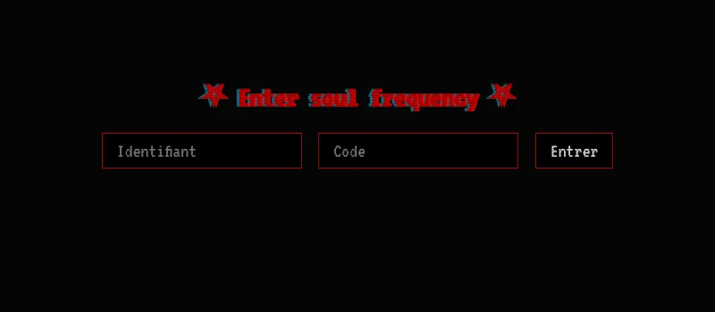
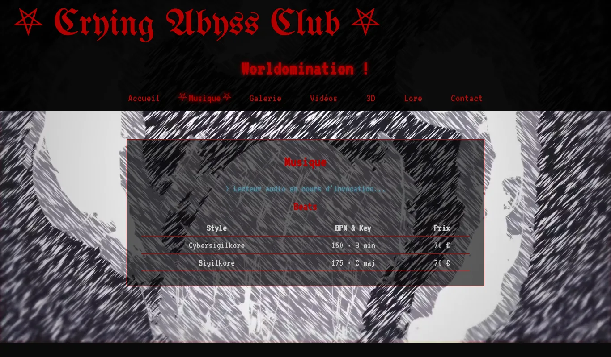

another-lie

L'écran de démarrage : texte tapé lettre par lettre et barre de chargement.
Accès au site : identifiant newid · code 123
L'écran d'accès fait partie de la mise en scène : la vérification se fait dans le navigateur, ce n'est pas une vraie protection.
Description
another-lie est le site de l'univers visuel et musical de mon projet vvh0sn3xt (sigilkore / dark trap). Il reprend l'esthétique du projet : terminal en panne, glitchs, rouge sang et polices gothiques. Le but était d'apprendre le HTML, le CSS et le JavaScript en construisant un site qui me ressemble, sans framework.
Ce que fait le site
- Écran de démarrage : lignes de « diagnostic » écrites lettre par lettre, avec une barre de progression qui avance au même rythme.
- Écran d'accès : identifiant et code demandés avant d'entrer. L'accès est retenu pendant la session (
sessionStorage), et les autres pages renvoient vers l'accueil si on n'est pas passé par cet écran. - Effets glitch : sur le logo, sur le menu au survol et pendant les transitions entre les pages.
- Galerie filtrable : les créations sont décrites dans un fichier de données séparé (
data/creations.js), ce qui permet d'en ajouter sans toucher au code de la page. - Vidéo en fond et logo 3D animé intégré dans un coin de l'écran.
- Pages : musique, galerie, vidéos, 3D, lore, contact.
Git et publication
J'ai développé le site sur une branche de fonctionnalité (feature/page-accueil), avec des commits réguliers, puis fusionné cette branche dans main. La branche main est publiée automatiquement par GitHub Pages : chaque git push met le site à jour.
Ma part dans le projet
Idée, univers visuel et direction artistique, choix des fonctionnalités, tests, gestion du dépôt Git et mise en ligne.
Le code est écrit avec l'assistance d'une IA. Je le relis et je l'applique en cherchant à le comprendre, pour pouvoir le faire évoluer moi-même.
Captures

